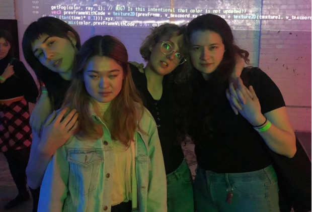
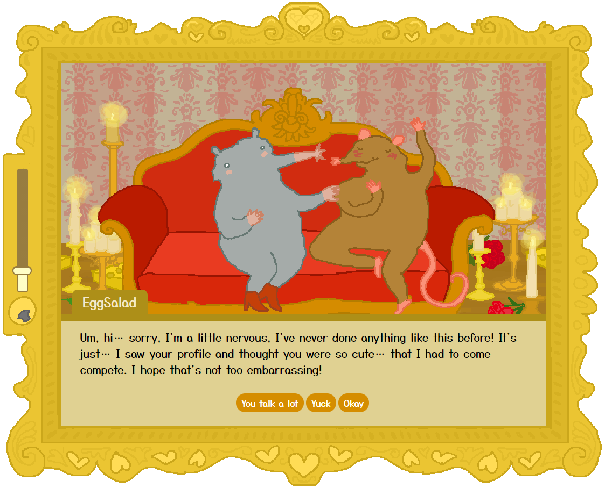
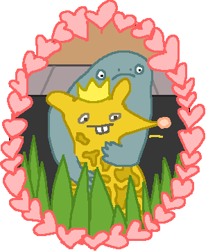
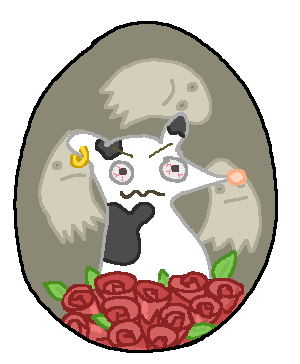
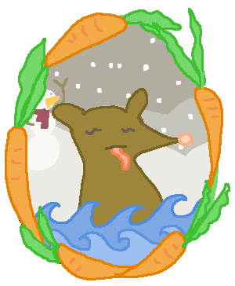
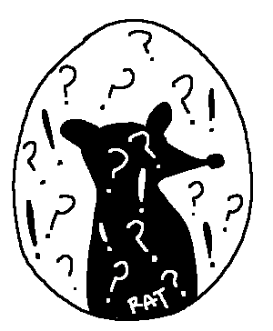
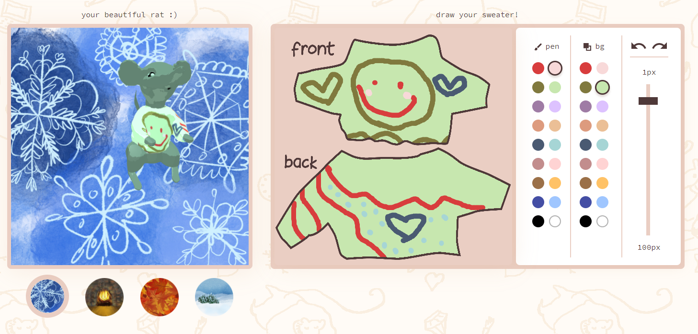
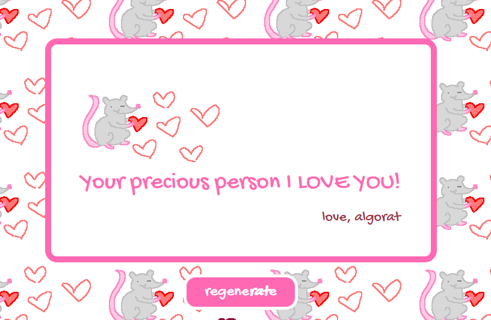

Algorat.club
Algorat is a collective whose members are Caroline Hermans, Connie Ye, Char Stiles, and Tatyana Mustakos.
Find us on Twitter and Instagram
We are a rat-centric computational arts collective that primarily make online content that can be experienced on your phone or laptop, and can be shared with friends. We started making things in 2019; check out or website at algorat.club
Here are some of our Projects:
The Ratchelor
Play it here
Read more about it here
The Ratchelor is an online dating game where you meet many rats and find true love

Ratmaker
Try it out here
Ratmaker lets you create a custom rat persona by selecting various characteristics or randomizing.




Sweaterat creator
Try it out here
Interactive canvas that lets you customize a rats sweater as he rotates through 3d space.

Algotines
Try it out here
Algotines is a nonesense valentines generator that we made for Valentines day 2019. Uses markov chains and data scraped hallmark cards to create silly shareable sentiments.
